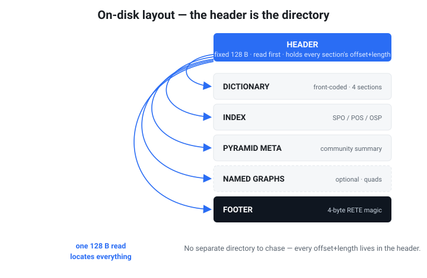
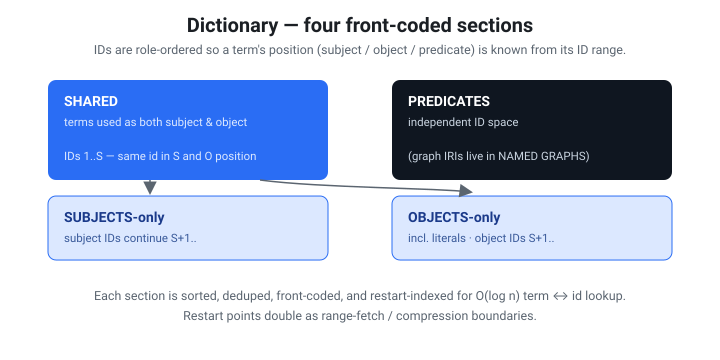

Rete — a cloud-native, range-queryable RDF graph file
Status: Draft 0.1 (design) · File extension: .rete · Magic: RETE\x01
One file. Put it on S3, GitHub, or any HTTP server that honors
Range. Give a client the URL. Run SPARQL. No database server.Like Parquet for tables and PMTiles for maps — but for RDF graphs, with a pyramid of progressively-refined detail.
1. Goals & non-goals
Goals
- Single immutable file, queryable in place over HTTP
Rangerequests. - Bounded request count to answer a query — the client reads a small header (which carries every section's byte range), then fetches only the sections a query actually touches (≤4 ranges for a full open; 3 for the overview path).
- SPARQL evaluation against the file (start with Basic Graph Patterns; grow toward joins, filters, paths).
- Progressive / pyramidal access: a coarse summary graph loads first, and the client refines by "zooming into" regions of interest.
- WASM-friendly: the same query core runs in a browser and in a CLI.
- RDF-faithful: IRIs, blank nodes, literals (with datatype + language tag), and named graphs (quads).
Non-goals (v0)
- Mutation. The file is build-once / read-many. Updates = rebuild (or, later, a separate overlay file). This buys aggressive compression and CDN caching.
- Full SPARQL 1.1 on day one. We stage it (see §8).
- Inference / reasoning at query time. Materialize before build if wanted.
2. Prior art we build on
| Source | What we take |
|---|---|
| HDT (Header-Dictionary-Triples) | Dictionary + bitmap-encoded triples; the closest existing queryable single-file RDF format. We extend it toward range/progressive access. |
| PMTiles | Header → root directory → leaf directories → data, all byte-range addressable, with a bounded number of requests. This is the spine of our pyramid + index. |
| Parquet | Footer metadata, blocks ("row groups"), and per-block min/max "zone maps" enabling pushdown / block-skipping. |
| FlatGeobuf | Packed static index (R-tree) co-located in the file for streamable spatial queries; our analog indexes graph locality. |
Oxigraph (oxrdf, spargebra, oxttl) | Reuse RDF model, SPARQL parser, and algebra rather than writing our own. |
3. Conceptual model
An RDF dataset = a set of quads (subject, predicate, object, graph).
Three transformations make it range-queryable:
- Dictionary encoding — every IRI / literal / blank node ⇒ a dense integer ID. Triples become integer triples; the dictionary is stored once, compressed.
- Permutation indexes — store the integer triples sorted in multiple orders (SPO, POS, OSP) so any triple pattern resolves to a contiguous scan.
- Pyramid (community summarization) — partition nodes into a hierarchy of communities. Level 0 is a quotient graph (communities as supernodes, with aggregated edges). Each deeper level expands supernodes into their members.
4. File layout
v0 on-disk layout (what write_file/write_dataset actually emit). The header
is the directory: it carries the absolute offset+length of every section, so a
client finds everything from the first 128-byte read — no separate directory or
metadata block to chase.

The header is the directory: a single 128-byte read carries the offset and length of every section. The ASCII below is the precise reference.
┌──────────────────────────────────────────────────────────────┐
│ HEADER fixed-size, 128 bytes, read first. │
│ Holds the offset+length of every section below, the codec │
│ ids, counts, and the blake3 content hash (§4.1). │
├──────────────────────────────────────────────────────────────┤
│ DICTIONARY front-coded container of four sections: │
│ ├ shared (terms used as both subject & object) │
│ ├ subjects-only │
│ ├ objects-only (incl. literals) │
│ └ predicates (graph IRIs live in NAMED GRAPHS) │
├──────────────────────────────────────────────────────────────┤
│ INDEX default-graph permutation container: │
│ SPO / POS / OSP streams, each a zone-mapped, delta-coded, │
│ (optionally zstd) block. Pointed to by `root_dir_offset`. │
├──────────────────────────────────────────────────────────────┤
│ PYRAMID META summary superedges (community quotient graph)│
│ + optional per-community tiles. Pointed to by pyramid fields.│
├──────────────────────────────────────────────────────────────┤
│ NAMED GRAPHS optional: (graph IRI, permutation container) │
│ per named graph, sharing the dictionary. Quads only. │
├──────────────────────────────────────────────────────────────┤
│ FOOTER 4-byte `RETE` magic — a format/integrity │
│ sentinel (the directory is the header). │
└──────────────────────────────────────────────────────────────┘
Per-level, per-tile leaf directories (mapping (level, tile, perm) to byte
ranges, PMTiles/Parquet style) are part of the fuller design but not materialized
in v0 — the current index is a single default-graph container plus the pyramid
summary; tile-routed range queries are future work (see docs/BENCHMARK.md).
4.1 Header (128 bytes, little-endian)
| Offset | Size | Field |
|---|---|---|
| 0 | 4 | magic RETE |
| 4 | 1 | format version (0x01) |
| 5 | 1 | flags (bit0: has named graphs / quads) |
| 6 | 2 | header length |
| 8 | 8 | metadata offset |
| 16 | 8 | metadata length |
| 24 | 8 | dictionary offset |
| 32 | 8 | dictionary length |
| 40 | 8 | root directory offset |
| 48 | 8 | root directory length |
| 56 | 8 | pyramid-meta offset |
| 64 | 8 | pyramid-meta length |
| 72 | 1 | dictionary codec id |
| 73 | 1 | block codec id (e.g. zstd) |
| 74 | 2 | number of pyramid levels |
| 76 | 8 | total quad count |
| 84 | 8 | total term count |
| 92 | 16 | content hash (blake3, first 16 bytes) — also an ETag-like id |
| 108 | 8 | named-graphs section offset (0 if default-graph only) |
| 116 | 8 | named-graphs section length (0 if default-graph only) |
| 124 | 4 | reserved |
Rationale: a fixed 128-byte header means one tiny range read (
bytes=0-127) tells the client where every section lives.
5. Dictionary

Four front-coded sections with role-ordered IDs: a term's ID range reveals whether it is a subject, object, or predicate.
-
Terms are sorted within each kind and front-coded (store the shared prefix length + the suffix vs. the previous term). Cheap to compress, supports binary search for
string → id, and prefix-friendly for IRI namespaces. -
IDs are assigned so that shared terms get the lowest IDs, then subjects, then objects — this lets a triple pattern know a term's role from its ID range.
Concretely (the HDT four-section scheme): let
S= #shared (terms used as both subject and object). Subject IDs are1..=S(shared) thenS+1..(subject-only); object IDs are1..=S(the same shared IDs) thenS+1..(object-only). So a shared term has one ID that means the same thing in subject and object position. Predicates and graphs occupy their own independent ID spaces. This is whatdictionary.rsbuilds on top of the §5.1 sections. -
Literals carry datatype IRI (as a dictionary ID) and optional language tag.
-
The dictionary is four independently-decompressible sections (shared / subjects / objects / predicates), each with a restart-indexed table (§5.1) that supports
O(log n)term↔ID lookup once loaded. In v0 a client fetches the whole dictionary section as one range; splitting each section into independently range-fetchable chunks (so resolving one IRI pulls only its run) is future work the restart table already enables.
5.1 Section encoding (front-coded, restart-indexed)
Each dictionary kind (shared / subjects / objects / predicates / graphs) is one
section. Within a section terms are UTF-8, sorted ascending, deduped, and
assigned dense 1-based IDs in that order (ID 0 is reserved as "absent").
Terms are stored in runs of R entries (default R = 16, the restart
interval). Each run begins at a restart point storing the full term; the
remaining R-1 entries are front-coded against their predecessor:
restart entry: varint(0) varint(len) bytes[len] # full term
delta entry: varint(shared_pfx) varint(suf) bytes[suf] # share prefix
A small restart index (one (first_term, byte_offset) per run, the first
terms also front-coded against each other) sits at the head of the section. Both
lookups stay within one run after a binary search over restarts:
id → term: run =(id-1) / R; jump to its offset; decode forward(id-1) % Rsteps.term → id: binary-search the restart index for the candidate run; decode that run comparing each materialized term; return its ID orNone.
Restart points are also the natural chunk/compression boundaries: a client fetches just the run(s) covering the IDs/terms a query touches.
6. Triples / quads
- Stored as integer triples in three permutations: SPO, POS, OSP. These three cover all eight triple-pattern shapes (any combination of bound/unbound S, P, O resolves to a contiguous range in at least one index).
- Each permutation is encoded as an adjacency / bitmap-triples structure (HDT-style): for SPO, a sorted list of subjects, each with its predicate list, each with its object list, delta-encoded.
- Quads (named graphs) add a
Gdimension; v0 stores per-graph triple sets plus a default-graph union. (Full GSPO permutations are a later optimization.) - Triples are partitioned by pyramid tile (see §7), and within a tile split into fixed-size blocks. Every block is prefixed with a zone map (min ID, max ID, count) so the query planner can skip blocks — Parquet-style.
6.1 Triple block encoding (grouped delta)
Within a block, triples for a permutation are sorted ascending on (a, b, c)
(e.g. SPO ⇒ a=S, b=P, c=O) and stored as a nested grouped, delta-coded
adjacency — the compact, decode-forward form HDT calls bitmap-triples, written
here with explicit group counts:
zone map: varint min_a, max_a, min_b, max_b, min_c, max_c, triple_count
body: varint num_a
per a-group: varint Δa # Δ from previous a (first = absolute)
varint num_b
per b-group: varint Δb # Δ from previous b *within this a*
varint num_c
per c: varint Δc # Δ from previous c *within this b*
Deltas reset at each group boundary, so values stay small and varint-friendly.
The zone map lets the planner skip a block whose [min,max] range cannot
contain a bound constant before fetching the body — the §7 routing then bounds
which blocks are fetched at all.
7. The pyramid — community summarization
The headline feature. "Zoom" = level of graph detail.

Top to bottom: coarse community summary → communities → full triples. Fewer bytes at the top, more detail below; clients fetch the overview first and drill down on demand.
7.1 Build time
-
Run hierarchical community detection (Leiden, falling back to Louvain) on the (optionally edge-weighted) graph. This yields a dendrogram of communities.
-
Cut the dendrogram into levels. Level 0 = coarsest: each top-level community becomes a supernode. Level N-1 = the full graph.
Cut policy: size-targeted tiles (committed). We do not fix
Nup front. Instead each tile targets a byte budgetT(default ~64 KiB, configurable) so that one zoom ≈ one block ≈ one range read, exactly like PMTiles. We descend the dendrogram and emit a tile boundary whenever a community's encoded triple payload would exceedT; communities still larger thanTat the finest cut are split into multiple co-located tiles.N(the level count) therefore falls out of the data andT, rather than being chosen by hand. Consequences: predictable request sizes, uniform client latency per zoom, and a directory whose leaf granularity matches the transfer unit. -
For each level build the quotient graph:
- supernode = a community; its weight = node/edge count inside.
- superedge
A→Bfor predicatep= aggregate of allpedges crossing from communityAto communityB, with a count.
-
Emit, per supernode, the member map (which finer supernodes / nodes it expands into) so a client can drill down without re-clustering.
7.2 Query / browse time
- Client loads level 0 (small): a graph of supernodes + aggregated relations. Good for overview, "shape of the data," and routing.
- To zoom into a supernode, the client follows its directory entry to fetch only that community's finer level — one (or few) range reads.
- SPARQL over the pyramid: a query can run against a level (approximate / rolled- up answers via superedges) or be routed — use level 0 to find which communities can satisfy the pattern, then descend only into those tiles. This is the graph analog of Parquet block-skipping.
7.3 Level descriptor (in pyramid-meta)
level {
id, node_count, edge_count,
tiles: [ tile { id, member_supernode_ids, dir_key } ],
parent_level, child_level
}
8. SPARQL evaluation (staged)
Implemented in rete-core::sparql (parses with spargebra, lowers to a small
plan algebra — Bgp/Join/Union/Minus/LeftJoin/Filter/Path/Values/
Graph):
- Stage 1 — Triple patterns & BGPs. ✅ Integer patterns over the permutation
index, nested-loop join on shared variables (
bgp.rs). Blank nodes in patterns are non-distinguished variables. - Stage 2 — FILTER, projection, DISTINCT, ORDER BY, LIMIT/OFFSET. ✅ (ORDER BY sorts on variable/constant keys: numeric when both are numbers, else lexical; complex key expressions are not yet evaluated for ordering.)
- Stage 3 — OPTIONAL, UNION, MINUS, VALUES, FILTER EXISTS/NOT EXISTS,
property paths, GRAPH. ✅ Paths (
p+/p*/p?, reverse, sequencea/b, alternativea|b) evaluated forward from a bound endpoint in integer node space. Named graphs / quads (full dataset model): N-Quads input → one shared dictionary + a permutation index per graph;GRAPH <iri>/GRAPH ?gswitch the active graph,FROMbuilds the default graph as an RDF merge,FROM NAMEDscopes which graphsGRAPHsees, and EXISTS honors the enclosing graph context. Future: let paths exploit the pyramid (coarse reachability). - Stage 4 — Aggregation / GROUP BY / HAVING. ✅ COUNT/SUM/AVG/MIN/MAX,
BIND, expression functions (arithmetic, CONCAT, SUBSTR, type checks, …). Exact
per-predicate totals come straight from the summary superedge counts
(
SummaryView::predicate_totals) without reading the index. - Query forms. ✅ SELECT, ASK, CONSTRUCT, DESCRIBE (concise bounded description = each resource's outgoing triples).
- Input/output. ✅ N-Triples + Turtle input; SPARQL Results JSON output.
- Not supported (rejected with a clear error, never silently mis-evaluated):
subqueries (nested
SELECT) andSERVICE(federation — out of scope for a single self-contained file). Complex ORDER BY key expressions (beyond a bare variable/constant) are also not yet evaluated for ordering.
The planner's job is to minimize bytes fetched, not CPU — the cost model is dominated by range-request count and block sizes.
9. Access protocol (the client)
v0 (the header is the directory — every section offset/length is in it, so no separate directory/footer round-trip is needed):
1. GET bytes=0-127 → header: all section offsets/lengths + content hash
2a. Overview path → GET dictionary + pyramid-meta ranges; answer from the
summary (community quotient graph, per-predicate totals). The index is
never fetched. (`SummaryView::open_ranged`; `summary_overview` in wasm.)
2b. Full query path → GET dictionary + index (+ named-graphs) ranges, then:
- resolve constant terms in the dictionary
- match the pattern in the SPO/POS/OSP permutation blocks (zone-map pruned)
- resolve result IDs back to terms via the dictionary
A full open touches ≤4 ranges (header, dict, index, pyramid-meta); the overview
path touches 3 and skips the index entirely — both asserted by the ranged test
suite. Per-tile leaf directories that would let the full query path fetch only
the relevant community tiles (rather than the whole index) are future work.
- The file is immutable; its content hash (header field) acts as a strong
validator. Clients may cache sections by
(url, hash, range)forever. - Range coalescing + a small read-ahead keep the request count low.
- Malformed input is safe. Because a
.retecan be fetched truncated or corrupt from an arbitrary URL, every header-derived offset/length and every embedded section length is bounds-checked before use. This holds end-to-end:openand the ranged readers, and querying a file that opened but carries corrupt block/dictionary internals (term resolution, front-coded delta decode, permutation-block iteration, unified node-id mapping) all return empty/Noneor an error — never panic, never over-allocate on an untrusted count. (Covered by therobustnesssuite: all truncations, header byte-flips, and arbitrary garbage, each then exercised throughdump/query/SPARQL incl. a property path.)
10. Language & build
- Rust core, compiled to both native (CLI, server-side) and WASM (browser client) — identical query code in both.
- Crates to lean on:
oxrdf/oxttl/spargebra(RDF + SPARQL),object_store(S3/GCS/HTTP range reads),zstd,blake3, a Leiden/Louvain implementation. - Everything runs in Docker dev containers. No host execution. The container
carries the Rust toolchain +
wasm-pack.
11. Open questions
- Quad/named-graph indexing — per-graph triple sets vs. full GSPO/GPSO permutations. Cost vs. query flexibility.
- Literal indexing — do we want value-range indexes (numeric/date) for FILTER pushdown, à la Parquet zone maps on literal values?
Pyramid cut policy— resolved (§7.1): size-targeted tiles, default budgetT≈ 64 KiB, PMTiles-style. Remaining sub-question: best defaultTand whetherTshould scale with the dictionary/literal mix.- Multiple summarization strategies — two are implemented: community
(structural, Louvain — the stored pyramid) and schema (ontology-aware,
relations between
rdf:typeclasses —schema_summary/rete schema). An importance-based one (PageRank/centrality) is still open. The community summary is stored; schema is computed on demand (storing it for cheap HTTP access is a future step). - Overlay/diff files for "appendable-ish" updates without abandoning immutability.
12. Glossary
- Term — an RDF IRI, blank node, or literal.
- Quotient graph — graph whose nodes are communities and whose edges aggregate the original edges crossing between them.
- Supernode — a community represented as a single node at a pyramid level.
- Zone map — per-block min/max/count stats enabling block-skipping.
- Tile — the unit of range-addressable data for a (level, community).